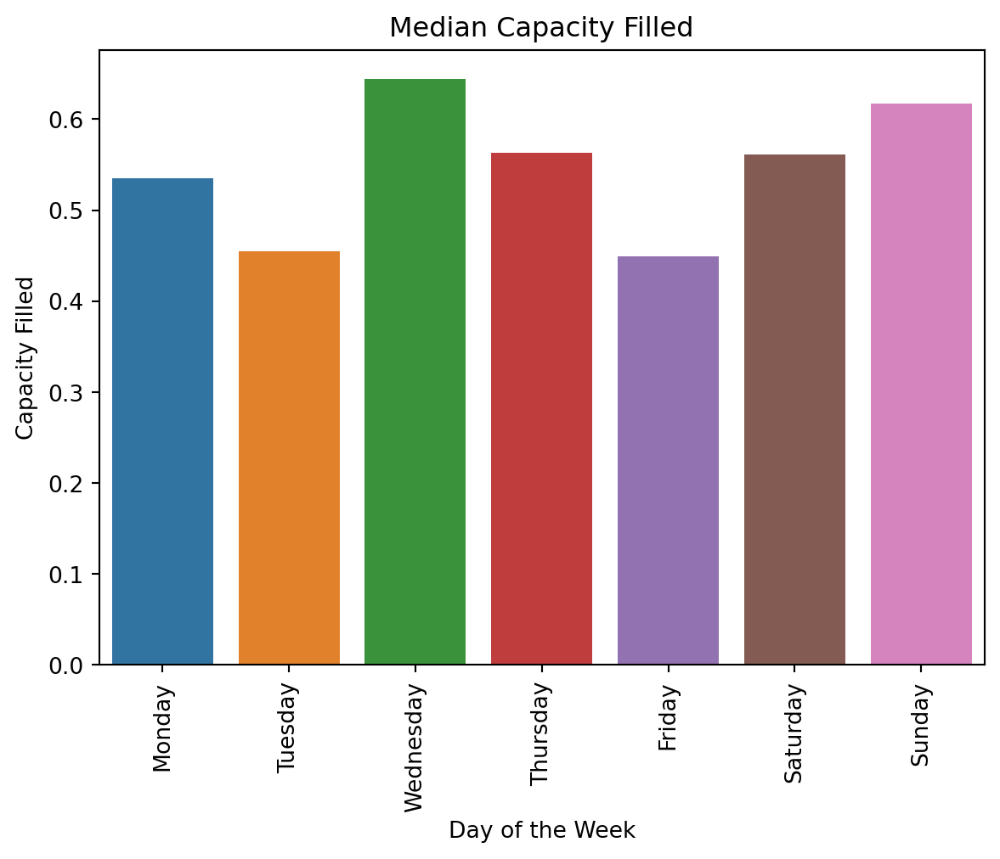
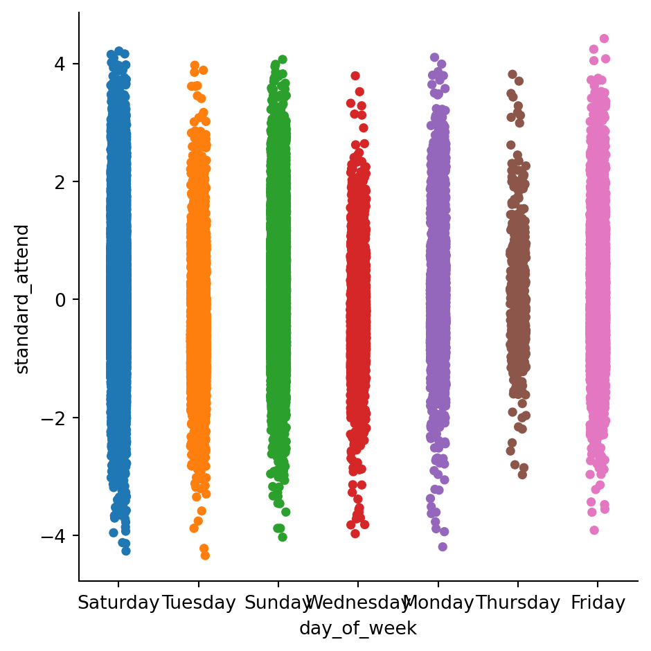
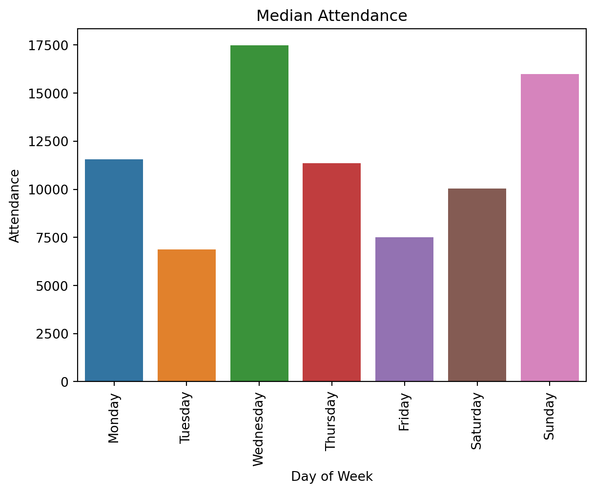
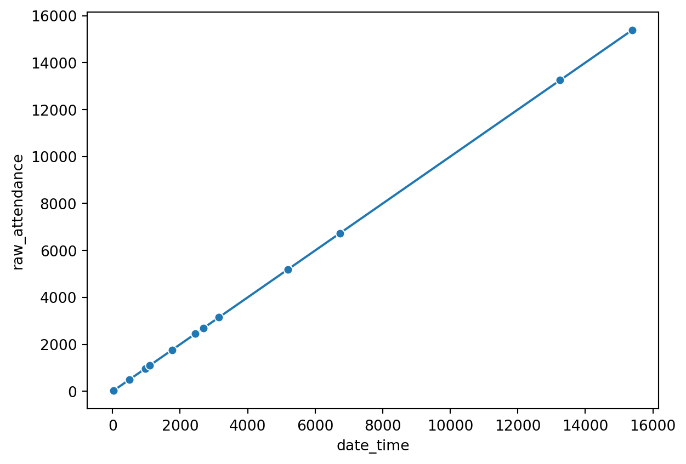
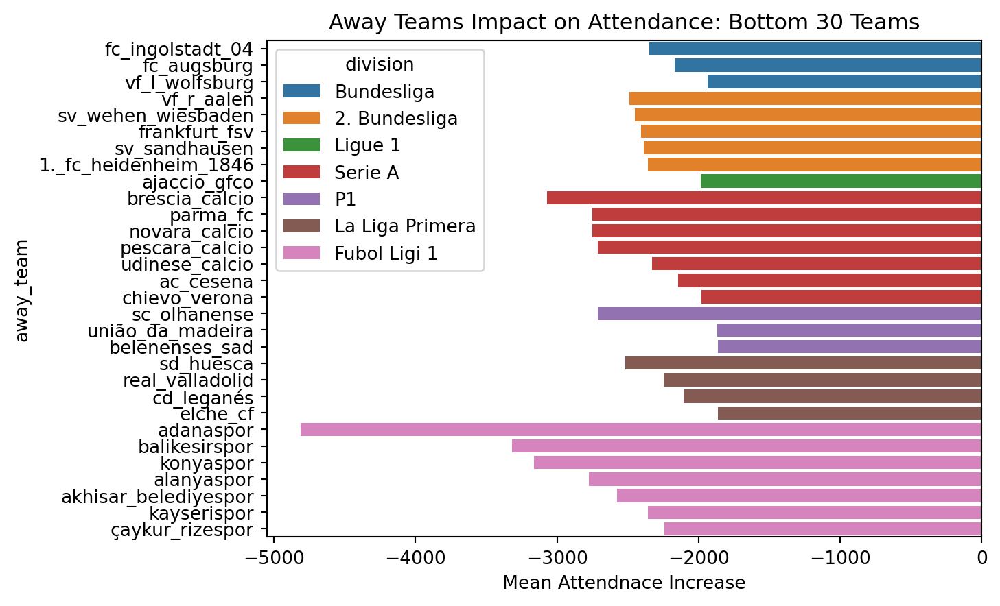
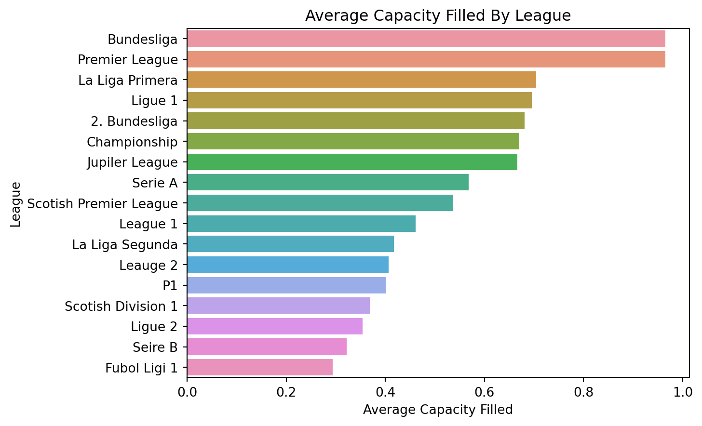
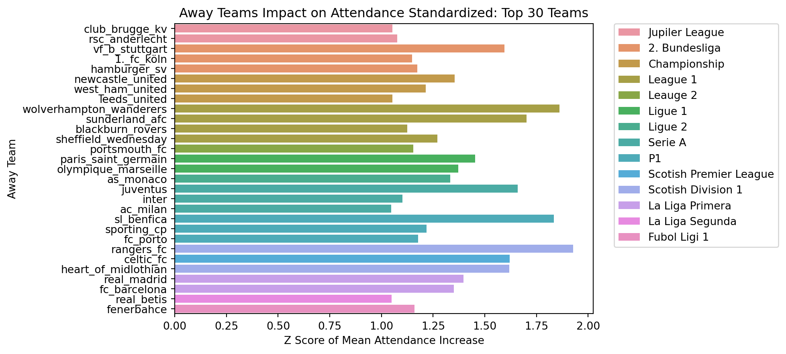
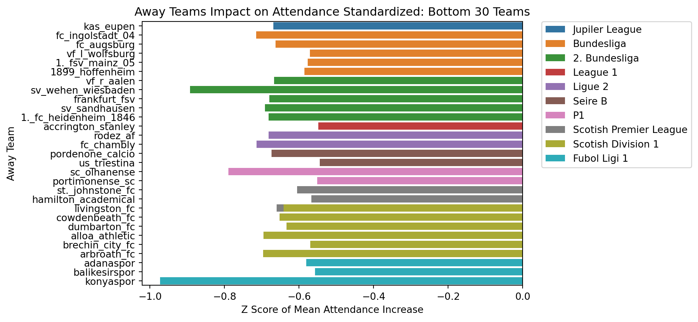

import pandas as pd
import numpy as np
import seaborn as sns
import matplotlib.pyplot as pltDemand of Football in European Leagues
Background
Dataset
- Combined Data sets from Football-Data.co.uk and worldfootball.net
- Shrunk data from 107 columns to 38
- Data is from 2010-2019
- Conisists of 53,238 rows
total_data_set = pd.read_pickle('d:/Python Work/Capstone/data/final_datasets/total_data.pkl')
print(total_data_set.columns)Index(['home_team', 'away_team', 'home_score', 'away_score', 'date', 'time',
'day_of_week', 'raw_attendance', 'stadium', 'city', 'country',
'capacity', 'url', 'division', 'FTHG', 'FTAG', 'FTR', 'HTHG', 'HTAG',
'HTR', 'B365H', 'B365D', 'B365A', 'BWH', 'BWD', 'BWA', 'WHH', 'WHD',
'WHA', 'VCH', 'VCD', 'VCA', 'BbMx>2.5', 'BbAv>2.5', 'BbMx<2.5',
'BbAv<2.5', 'capacity_filled', 'date_time'],
dtype='object')Progress
Day of the Week Capacity Filled
time_df = pd.read_pickle('d:/Python Work/Capstone/data/final_datasets/time_shrink.pkl')
df_grouped_mean = time_df.groupby('day_of_week')['raw_attendance', 'capacity_filled'].mean().reset_index()
df_grouped_median = time_df.groupby('day_of_week')['raw_attendance', 'capacity_filled'].median().reset_index()
day_categories = ['Monday', 'Tuesday', 'Wednesday', 'Thursday', 'Friday', 'Saturday', 'Sunday']
df_grouped_median['day_of_week'] = pd.Categorical(df_grouped_median['day_of_week'], categories= day_categories)
df_grouped_median.sort_values(by = 'day_of_week', inplace = True)
sns.barplot(data=df_grouped_median, x = 'day_of_week', y = 'capacity_filled').set(title ='Median Capacity Filled')
plt.xticks(rotation=90)
plt.xlabel('Day of the Week')
plt.ylabel('Capacity Filled')
plt.show()C:\Users\matth\AppData\Local\Temp\ipykernel_2980\1725196363.py:3: FutureWarning:
Indexing with multiple keys (implicitly converted to a tuple of keys) will be deprecated, use a list instead.
C:\Users\matth\AppData\Local\Temp\ipykernel_2980\1725196363.py:4: FutureWarning:
Indexing with multiple keys (implicitly converted to a tuple of keys) will be deprecated, use a list instead.

Day of the Week Attendance
sns.barplot(data=df_grouped_median, x = 'day_of_week', y = 'raw_attendance').set(title ='Median Attendance')
plt.xticks(rotation=90)
plt.ylabel('Attendance')
plt.xlabel('Day of Week')
plt.show()
Day of the Week total Count
grouped_week_count = time_df.groupby('day_of_week').count().reset_index()
grouped_week_count['day_of_week'] = pd.Categorical(grouped_week_count['day_of_week'], categories= day_categories)
grouped_week_count.sort_values(by = 'day_of_week', inplace = True)
sns.barplot(data = grouped_week_count, x = 'day_of_week', y = 'date')
plt.xlabel('Day of the Week')
plt.ylabel('Count')
plt.title('Number of games per day of the Week')
plt.show()
Attendance Time of Day
df_grouped_mean_tod= time_df.groupby(time_df['date_time'].dt.hour).mean()
df_grouped_median_tod= time_df.groupby(time_df['date_time'].dt.hour).median()
sns.lineplot(data = df_grouped_median_tod, x = 'date_time', y = 'raw_attendance', markers = True, marker = "o" )
plt.title('Attendance by Time of Day')
plt.xlabel('Hour of the Day')
plt.ylabel('Attendance')
plt.show()
Number of Games Time of Day
df_grouped_count = time_df.groupby(time_df['date_time'].dt.hour).count()
# df_grouped_count= df_grouped_count.rename(columns = {'date':'count'})
print(df_grouped_count)
# sns.lineplot(data = df_grouped_median_tod, x = 'date_time', y = 'raw_attendance', markers = True, marker = "o" )
# ax2 = plt.twinx()
sns.lineplot(data = df_grouped_count, x = 'date_time', y = 'raw_attendance', markers = True, marker = "o" )
plt.show() date time day_of_week date_time raw_attendance \
date_time
10 31 31 31 31 31
11 1098 1098 1098 1098 1098
12 2446 2446 2446 2446 2446
13 967 967 967 967 967
14 6730 6730 6730 6730 6730
15 15395 15395 15395 15395 15395
16 2690 2690 2690 2690 2690
17 5188 5188 5188 5188 5188
18 1767 1767 1767 1767 1767
19 13252 13252 13252 13252 13252
20 3154 3154 3154 3154 3154
21 502 502 502 502 502
22 18 18 18 18 18
capacity_filled
date_time
10 31
11 1098
12 2446
13 967
14 6730
15 15395
16 2690
17 5188
18 1767
19 13252
20 3154
21 502
22 18 
Away Teams Impact Best Teams
impact_data = total_data_set[total_data_set.division != 'SC2']
impact_data = impact_data[['home_team', 'away_team', 'date_time', 'division', 'raw_attendance', 'capacity_filled']]
impact_data['year']= impact_data['date_time'].dt.year
impact_data = impact_data.dropna()
average_team_attendance = impact_data.groupby(['year', 'home_team']).mean().reset_index().rename(columns = {'raw_attendance':'avg_raw_attendance', 'capacity_filled':'avg_capacity_filled'})
standard_dev_attendance = impact_data.groupby(['year', 'home_team']).std().reset_index().rename(columns = {'raw_attendance':'std_raw_attendance', 'capacity_filled':'std_capacity_filled'})
# print(average_team_attendance)
# print(standard_dev_attendance)
avg_df = pd.merge(impact_data,average_team_attendance, on = ['year','home_team'])
avg_df = pd.merge(avg_df, standard_dev_attendance, on = ['year', 'home_team'])
# print(avg_df)
# print(avg_df.isna().sum())
avg_df['away_team_impact'] = avg_df['raw_attendance'] - avg_df['avg_raw_attendance']
avg_df['attendance_zscore'] = (avg_df['raw_attendance']- avg_df['avg_raw_attendance'])/avg_df['std_raw_attendance']
# print(avg_df.sort_values('attendance_zscore'))
# avg_df.to_csv('src/Teams_impact/avg_df.csv')
away_team_impact = avg_df.groupby(['away_team', 'division']).mean().reset_index()
away_team_impact = away_team_impact[['away_team', 'attendance_zscore', 'away_team_impact','division']].reset_index()
away_top_30 = away_team_impact.sort_values('away_team_impact', ascending = False).head(30).sort_values(['division', 'away_team_impact'], ascending= [True, False])
div_dict = {'D1':'Bundesliga', 'D2': '2. Bundesliga', 'E0':'Premier League', 'E1':'Championship',
'E2':'League 1', 'E3':'Leauge 2','SP1':'La Liga Primera', 'SP2':'La Liga Segunda',
'B1':'Jupiler League', 'F1':'Ligue 1','F2':'Ligue 2','I1':'Serie A','I2':'Seire B',
'SC0':'Scotish Premier League', 'SC1':'Scotish Division 1', 'T1':'Fubol Ligi 1'}
away_top_30 = away_top_30.replace({'division':div_dict})
# div_avg = div_avg.replace({'division':div_dict})
# print(away_top_30)
sns.barplot(data = away_top_30, x = 'away_team_impact', y = 'away_team', hue = 'division', dodge = False)
plt.title('Away Teams Impact on Attendance: Top 30 Teams')
plt.xlabel('Mean Attendnace Increase')
plt.ylabel('Away Team')
plt.legend(bbox_to_anchor=(1.05, 1), loc='upper left', borderaxespad=0)
plt.show()
Away Team Impact Worst Teams
away_bottom_30 = away_team_impact.sort_values('away_team_impact', ascending = True).head(30).sort_values(['division', 'away_team_impact'], ascending= [True, True])
away_bottom_30 = away_bottom_30.replace({'division':div_dict})
sns.barplot(data = away_bottom_30, x = 'away_team_impact', y = 'away_team', hue = 'division', dodge = False)
plt.title('Away Teams Impact on Attendance: Bottom 30 Teams')
plt.xlabel('Mean Attendnace Increase')
plt.legend(bbox_to_anchor=(1.05, 1), loc='upper left', borderaxespad=0)
plt.ylabel('Away Team')
plt.show()
Division Capacity
div_dict = {'D1':'Bundesliga', 'D2': '2. Bundesliga', 'E0':'Premier League', 'E1':'Championship',
'E2':'League 1', 'E3':'Leauge 2','SP1':'La Liga Primera', 'SP2':'La Liga Segunda',
'B1':'Jupiler League', 'F1':'Ligue 1','F2':'Ligue 2','I1':'Serie A','I2':'Seire B',
'SC0':'Scotish Premier League', 'SC1':'Scotish Division 1', 'T1':'Fubol Ligi 1'}
div_avg = impact_data.groupby('division').median().reset_index().sort_values('capacity_filled', ascending = False)
div_avg = div_avg.replace({'division':div_dict})
# print(div_avg['division'])
# away_team_impact.to_csv('src/Teams_impact/away_team_impact.csv')
division_fig = sns.barplot(data = div_avg, y='division', x= 'capacity_filled')
# plt.bar(div_avg['division'], div_avg['capacity_filled'], align = 'center')
plt.title('Average Capacity Filled By League')
plt.xlabel('Average Capacity Filled')
plt.ylabel('League')
# sns.set_palette(sns.color_palette("rocket"))
plt.show()
Standardized Best Away Teams Impact
away_top_30_std = away_team_impact.sort_values('attendance_zscore', ascending = False).head(30).sort_values(['division', 'away_team_impact'], ascending= [True, False])
away_top_30_std = away_top_30_std.replace({'division':div_dict})
sns.barplot(data = away_top_30_std, x = 'attendance_zscore', y = 'away_team', hue = 'division', dodge = False)
plt.title('Away Teams Impact on Attendance Standardized: Top 30 Teams')
plt.xlabel('Z Score of Mean Attendance Increase')
plt.legend(bbox_to_anchor=(1.05, 1), loc='upper left', borderaxespad=0)
plt.ylabel('Away Team')
plt.show()
Standardized Worst Away Teams Impact
away_bottom_30_std = away_team_impact.sort_values('attendance_zscore', ascending = True).head(30).sort_values(['division', 'away_team_impact'], ascending= [True, True])
away_bottom_30_std = away_bottom_30_std.replace({'division':div_dict})
sns.barplot(data = away_bottom_30_std, x = 'attendance_zscore', y = 'away_team', hue = 'division', dodge = False)
plt.title('Away Teams Impact on Attendance Standardized: Bottom 30 Teams')
plt.xlabel('Z Score of Mean Attendance Increase')
plt.legend(bbox_to_anchor=(1.05, 1), loc='upper left', borderaxespad=0)
plt.ylabel('Away Team')
plt.show()
# import ipywidgets as widgets
# leagues_impact_away_team = away_team_impact
# # .sort_values('division').replace({'division':div_dict})
# divisions_list = list(set(leagues_impact_away_team.division.values.tolist()))
# # print(divisions_list)
# # print(sorted(divisions_list))
# divisions_list = [div_dict.get(item,item) for item in divisions_list]
# # print(divisions_list)
# # dd = widgets.Dropdown(
# # options = divisions_list,
# # value = divisions_list[0],
# # description = 'Select a Division'
# # )
# def draw_plot(divisions_list):
# df = away_team_impact[away_team_impact['division']==divisions_list]
# p = sns.barplot(data = df,
# x = 'attendance_zscore', y = 'away_team', dodge = False)
# division = widgets.Dropdown(options = divisions_list, description = 'Division:')
# gui = widgets.interactive(draw_plot, divisions_list = divisions_list)
# # display(x)
# guiSetbacks
- Data Scraping and Processing took significantly longer than expected
- Once Scraping and Processing was complete. The questions refereing to a teams position in the league affect on attendance were unattainable
- The position would be columsn that need to be created and with missing data and not a consitent schedule of leagues start date
- Calendar Mat plot have been a struggle to get to function properly.
Future Work
- Betting Data Analysis
- Model for Team Attendance